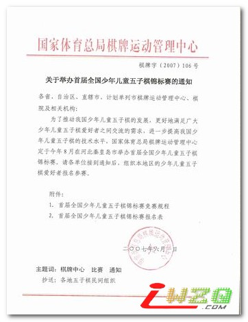
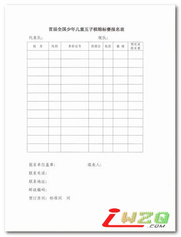

首届全国青少年五子棋锦标赛将于2007年8月6-10日在秦皇岛举办。本次比赛作为五子棋立项以来首次举办的面向青少年的赛事，意义重大，标志着中国五子棋的发展进入了崭新的时期。自5月成功举办首届全国五子棋团体赛后，8月的全国青少年锦标赛和10月的全国五子棋锦标赛将相继登场，形成大型的比赛体系，为广大五子棋爱好者提供更广阔的交流舞台。
本次比赛地点在秦皇岛的佳伦酒店，为三星级标准。比赛的对象为18周岁以下的五子棋爱好者。棋院正式发文不久公布。
发表时间：2007-8-11 21:58:09 首届全国少年儿童锦标赛落下帷幕
发表时间：2007-8-10 11:33:44 首届全国少儿赛女子少年组最终成绩表
发表时间：2007-8-10 11:32:30 首届全国少儿赛男子少年组最终成绩表
发表时间：2007-8-10 8:18:40 全少赛少年组北京豪取三冠
发表时间：2007-8-9 13:55:45 全少赛京冀争夺天王山 刘昭独霸女儿国
发表时间：2007-8-9 13:54:55 全少赛少男组李一领头 孙羽浩护航
发表时间：2007-8-9 13:53:58 全少赛少女组差距缩小
发表时间：2007-8-8 13:24:47 全国少儿赛第三日战报
发表时间：2007-8-7 20:42:38 男儿组三足鼎立 秦浙称霸女儿组
发表时间：2007-8-7 20:42:16 全少赛京浙领跑男女少年组
发表时间：2007-8-7 17:59:41 全国少儿赛第二日战报
发表时间：2007-8-7 12:24:59 全少赛京沪浙徽暂时领先
发表时间：2007-8-7 9:34:10 首届全国少年儿童五子棋锦标赛相关资料
发表时间：2007-8-7 8:58:21 全国少儿赛首轮战报
发表时间：2007-8-7 8:56:06 首届全国青少年五子棋锦标赛在秦皇岛开幕
首届全国少年儿童五子棋锦标赛竞赛规程
一、主办单位：国家体育总局棋牌运动管理中心
二、承办单位：河北省秦皇岛市体育局、秦皇岛市体育总会，秦皇岛快乐连珠俱乐部。
三、竞赛时间和地点：2007年8月6-10日在秦皇岛佳伦酒店举办。
四、竞赛项目：男女少年、儿童个人赛，以及男女合并计算成绩的少年组和儿童组团体赛。
五、参赛资格：
（一）符合竞赛分组规定的、身体健康的全国少年儿童均可报名参赛。
（二）参加团体赛者，每队每个年龄组至少须报男、女选手各2人。名单确定后，不得中途变更。
六、 竞赛办法：
（一）采用中国棋院最新颁布的《中国五子棋竞赛规则》。
（二）采用积分编排制进行比赛，电脑编排。比赛轮次视报名人数确定。报名人数少于10人的组采用循环赛制。
（三）比赛时限。少年组采用每人90分钟包干制，儿童组采用每人60分钟包干制，超时判负。
七、年龄分组：
少年组：1989年1月1日后至1994年12月31日期间出生；
儿童组：1995年1月1日后出生。
八、 裁判
正副裁判长由主办单位根据需要和精干的原则选派，其他裁判员由承办单位选派。
九、 成绩与名次计算
（一） 个人赛：采用积分编排制时首先比较得分，得分高者名次列前，如得分相同则依次比较对手分、累进分、胜局数，均为高者名次列前，如仍相同则比较违例次数，少者名次列前。如采用单循环赛制，则按照《中国五子棋竞赛规则》的规定计算成绩。
（二） 团体赛：各年龄组分别取每队最好名次男、女各两名队员的得分相加即为该队该组别的得分，得分高者名次列前，如果得分相同，则个人最好名次高者所在单位名次列前，个人最好名次一样者以男子组名次高者所在单位列前。
十、 录取名次与奖励
（一）根据参赛总人数确定录取名次。个人赛各组参赛人数在50人以上的录取前12名，参赛人数50人以下录取前8名，参赛人数20人以下录取前6名，10人以下的录取前3名，3人以下录取第1名。团体赛各组参赛队数在20个队以上的录取前8名，参赛队数在10个队以上的录取前6名，参赛队数在4

假如南通派选手去，会是什么名次呢？
估计会被修理的很惨哟！